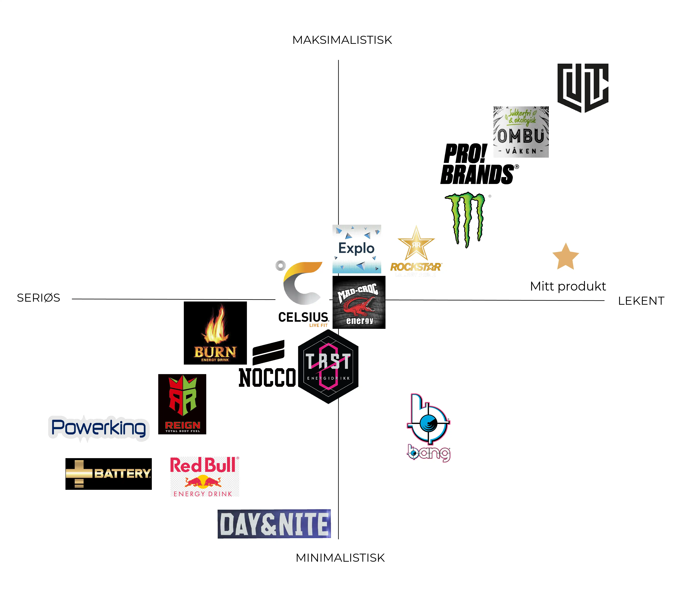
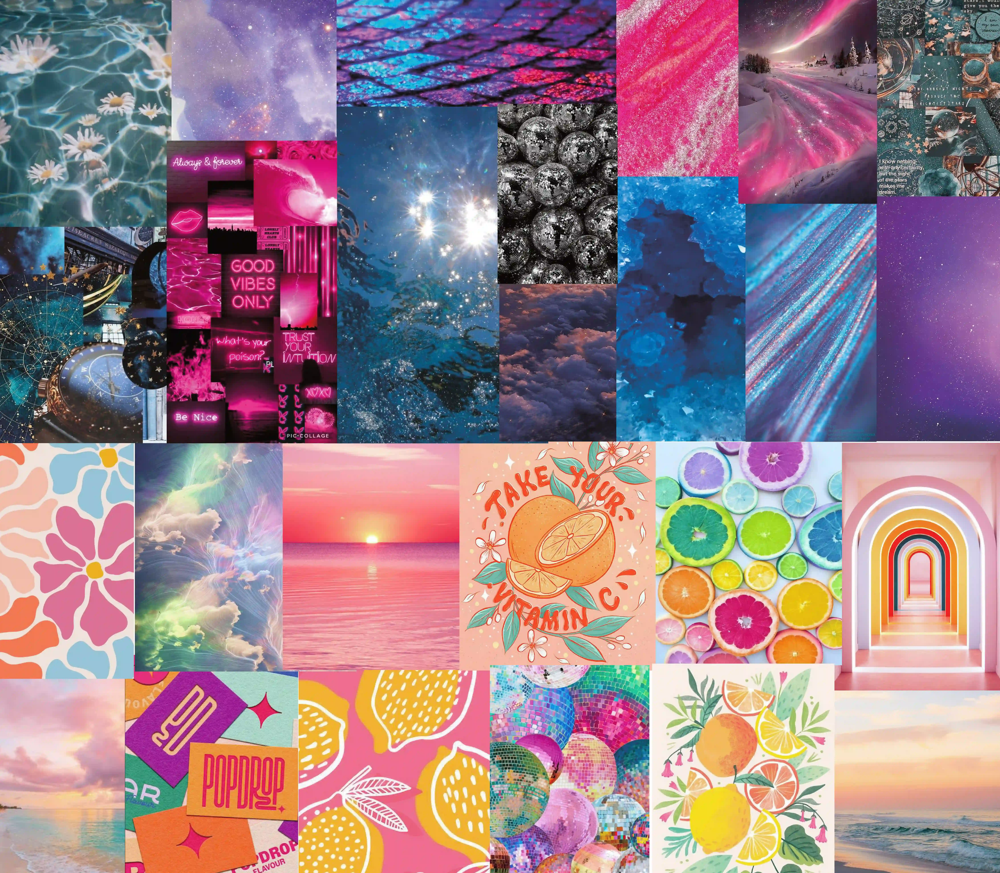
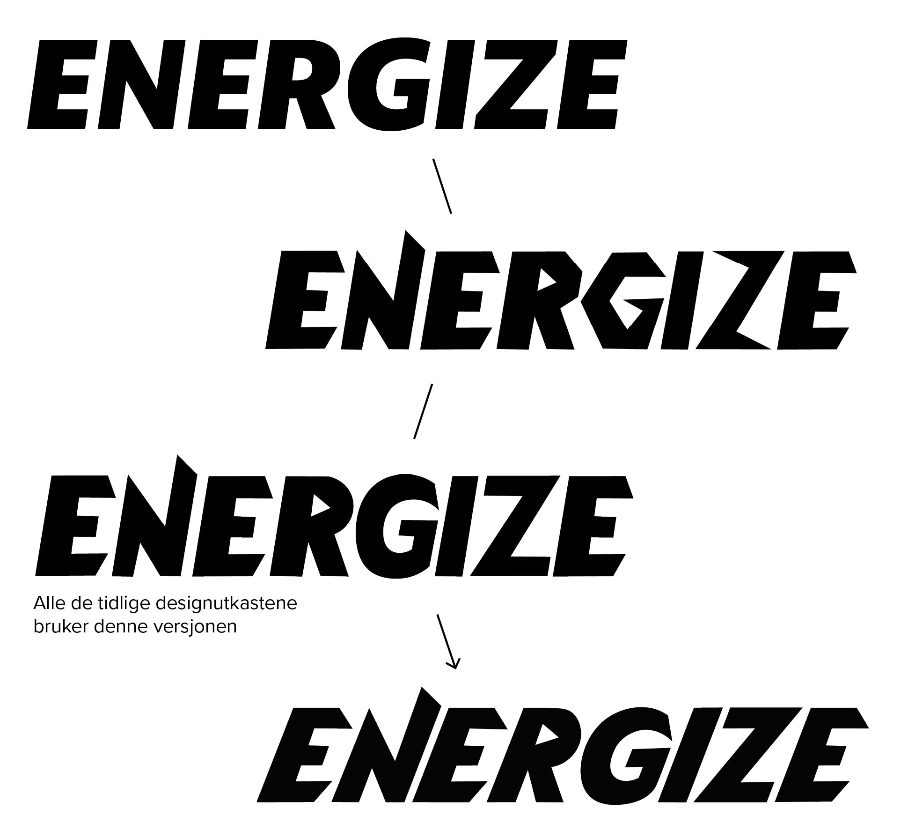
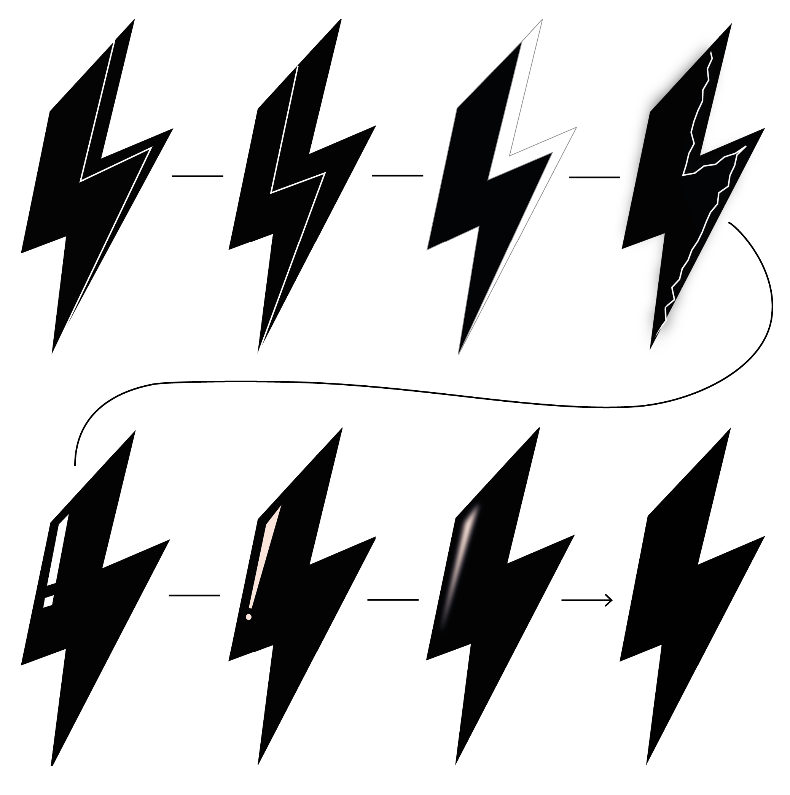
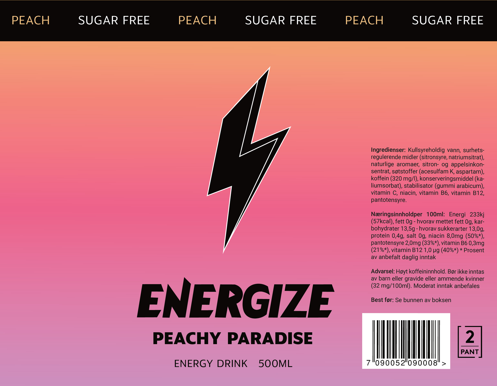

Visuell identitet/emballasje
Drømmeprosjekt
Skoleprosjekt
«Drømmeprosjektet» var en oppgave vi fikk på starten av mitt siste semester som grafisk design student. Her kunne vi velge hva slags prosjekt vi ønsket å jobbe med, og måtte utvikle et fiktivt designbrief.
Jeg valgte å utvikle en visuell identitet for et nytt energidrikk merke som fikk navnet «Energize». Jeg designet én logo, tre energidrikkbokser og én reklameplakat, og hentet inspirasjon fra LED-lys og gaming. Resultatet ble en gradienteffekt med sterke farger, små pixel-lignende former, og svarte detaljer som skaper en fin kontrast.
Verktøy: Illustrator, InDesign & Photoshop
Innsiktsarbeid
Før jeg startet på designprosessen utførte jeg en del innsiktsarbeid, for å finne ut hva slags designstil jeg burde går for. Energidrikk markedet er veldig stort og er mest populært blant unge i alderen 14–20 år. Det finnes flere ulike energidrikk merker med mye ulikt design, noe som gjør at man som designer har mulighet til å være veldig kreativ og utforske mange ulike ideer og designstiler når man skal designe nye energidrikk bokser.
Posisjoneringskart
Jeg bestemte meg for å lage et posisjoneringskart basert på hvordan konkurrentene mine har valgt å utvikle designet sitt. Noen bruker mange ulike farger og illustrasjoner, mens andre har et mer ensfarget og enkelt design. Jeg ønsket at «Energize» skulle plassere seg blant de som har et mer lekent design, og en mellomting mellom maksimalistisk og minimalistisk.
Moodboard
Deretter satt jeg sammen et moodboard som består av to veldig forskjellige stiler. Den øverste delen er ganske mørk og elegant, mens den nederste er mer søt og fargerik. Målet mitt var å kombinere disse to stilene i designet mitt, og skape et design som både har den søte, fargerike stilen, men også de mørke detaljene.
Markedsstrategi
Jeg kom på navnet «Energize» ganske tidlig i startfasen etter å ha vært innom et par andre navneforslag som ikke fungerte. «Energize» kan oversettes til å gi energi eller å få noen til å føle seg energisk eller ivrig. Derfor er dette et navn som beskriver produktet veldig bra
Markedsføringen og designet til «Energize» kommer hovedsaklig til å være retta mot ungdom og unge voksne. Mer spesifikt de som drikker energidrikk når de for eksempel gamer, eller trenger energi for å holde ut gjennom forelesningene.
Slagordet til «Energize» er «Power up your passion!». Tanken bak slagordet er at energidrikken er retta mot de som ønsker å få mer energi til å drive med lidenskapen sin. Uansett hva lidenskapen din er, så gir «Energize» deg nok energi til å styrke den!
Logoprosess
Første steg i designprosessen min var å prøve å få bokstavene i «Energize» til å passe med både navnet og konseptet. Jeg valgte å videreutvikle skrifttypen «Anona Extrabold Italic» ved å endre på bokstavene. Dette gjorde jeg ved å lage kantene litt skarpere og gi teksten litt mer liv ved å skråstille den. Målet mitt var å gjøre at bokstavene assosieres enda mer med energi og lyn, og dermed passer bedre til navnet.
I tillegg valgte jeg å utvikle et emblem formet som et lyn. Det første lynet med hvit strek brukes på alle designutkastene mine, men mot slutten av prosessen valgte jeg å teste ut noen nye versjoner også. Jeg var innom en del ulike idéer før jeg til slutt endte opp med å gjøre det veldig enkelt og bare gjøre hele lynet helt svart.
Designprosess
Designprosessen til dette prosjektet var lang, og jeg var innom mange ulike versjoner før jeg ble fornøyd.
Tekstoppsett
Jeg valgte å lage etikettene til boksene i formatet 206×160 mm, og startet prosessen med å teste ut hvordan jeg burde sette opp alt av tekstinnhold.
Valg av bakgrunn
Neste steg var å teste ut hva slags type bakgrunn som passet best. Jeg testet ut ulike farger og mønster, men endte til slutt opp med en enkel gradient.
Detaljer
Når både bakgrunnen var ferdig, begynte jeg å teste ut ulike måter å plassere en illustrasjon av en fersken som jeg tegnet selv. I tillegg valgte jeg å legge til litt flere detaljer på bakgrunnen for å gjøre designet litt mer spennende.
Ferdig «Peachy Paradise»
Jeg fant fort ut at illustrasjonen ikke fungerte, og valgte derfor å fjerne den, fordi den bidro til å gjøre designet mitt litt for barnslig. Mot slutten av prosessen valgte jeg også å finpusse logoen, og gjøre fargene mørkere. I tillegg la jeg til slagordet til «Energize» for å få med litt mer innhold på boksen.
«Berry Blast» prosess
Designprosessen med «Berry Blast» og «Apple Fresh» gikk raskere enn «Peachy Paradise» fordi designet allerede var klart. Det eneste jeg måtte endre på var fargene, og de små formene i bakgrunnen.
l
l
↓
«Apple fresh» prosess
Designprosessen med «Apple Fresh» var lik som prosessen med «Berry Blast»
l
l
↓
Utvikling av reklameplakat
Tilslutt utviklet jeg en reklameplakat. Jeg lagde den i A0 (841×1189) format og valgte å presentere alle tre smakene på én plakat. Her var jeg også innom et par idéer og testet ut både tekstoppsett og elementer, før jeg til slutt endte opp med en versjon som passer bra sammen med designet på boksene.